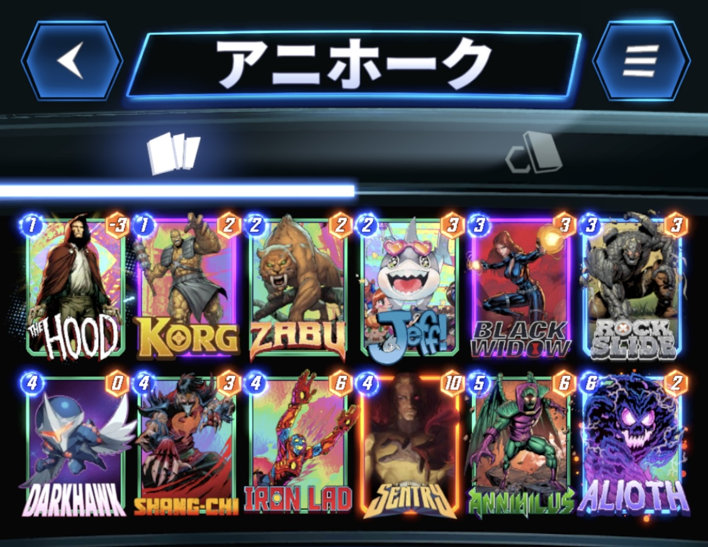

今回は、私７(@NANA1051815)が使用した『アニホーク』デッキを紹介したいと思います。
デッキ内容はこちら

1コスト：ザ・フッド、コーグ
2コスト：ザブー、ジェフ
3コスト：ブラック・ウィドウ、ロックスライド
4コスト：ダークホーク、シャンチー、アイアンラッド、セントリー
5コスト：アニヒラス
6コスト：アライオス
Xでよく見たダークホークとアニヒラスを組み合わせたデッキです。
単純に強そうだから使ってみようって使ったらめっちゃ強かったです。
基本的な立ち回りとしては、
①コーグ、ロックスライド、ブラックウィドウでダークホークを育てる。
②セントリー、デーモンなど高火力カードで攻める。
③アニヒラスでマイナス要因を送りつける。
④シャンチーで相手の攻めを崩す。
⑤アライオスでフィニッシュ。
というのが理想の動きになると思います。
詳しく解説していきます。
それでは各ターンの動き方を解説していきます。
コーグは、1ターン目に引けていたら積極的に出しましょう。
フッドは、アニヒラスを引けていれば積極的に出しましょう。
置くロケーションは問いません。
アニヒラスを引けていなければ、右ロケに置くのが無難です。
その際、ヴォイドとともに捨てロケにすることも視野に入れましょう。
ザブーを引けていたら積極的に出しましょう。
ジェフは、ザブーを引けていないときは出してかまいません。
ブラック・ウィドウは、マシンワールドがなければ、相手の手札枚数を確認して出してもいいです。
ロックスライドは、ロケーションや相手の状況問わず出してかまいません。
2ターン目にザブーを出せていたら、ダークホーク、セントリーあたりを出しましょう。
セントリーを置く場合、ヴォイドの処理のために、アニヒラスを握っていることが重要です。
手札がパッとしない場合は、とりあえずアイアンラッドを出すのもありです。
3ターン目にダークホークかセントリーを置けていたら、さらに火力を伸ばしてもいいですし、フッド、コーグ、ウィドウ、ロックスライドで繋いでもいいです。
ただし、シャンチー警戒で10パワー以上のカードはロケーションを分散させましょう。
このターンにアニヒラスを使うかの判断をします。
リーチが出てきそう、また相手がアニヒラスを採用していないデッキタイプであれば迷わず使って構いません。
アニヒラスデッキ、ロキデッキには注意が必要で、これらのデッキには、最終ターンに後攻を取ったうえでアニヒラスを使うか、このターンにアニヒラスを使い先行を取って次のターンにアライオスを使うかの選択をしなければなりません。
5ターン目にアニヒラスを使っているのであれば、シャンチーで相手を崩したり、アライオスで1ロケーション確保しにいきたいです。
このターンにアニヒラスを使う場合は、デーモンと合わせて出すのが理想的です。
負け筋としては、
①アーマーやプロフェッサーXで、フッドやヴォイドを固定される場合
②シャンチーで高パワーカードを除去される場合
③キルモンガーで1コストカードを一掃される場合
④リーチで６ターン目の計画が台無しになる場合
などが挙げられます。
それぞれ詳しく見ていきましょう。
フッドやセントリーを採用しているため、マイナス要因の処理が強いられます。
処理方法としてアニヒラス頼りになり、マイナス要因を抱えたまま複数ターンを跨がなければいけません。
その間に、相手がアーマー＋3枚のカードでロケーションを埋めてきたり、プロXでロケーションをロックしてくる場合は、アニヒラスでは対処することができないため、1ロケーション捨てる覚悟が必要です。
ダークホーク、セントリーを同時にシャンチーされることを避けるために、同じロケに置かないよう注意しましょう。
ダークホークのパワーが9以下の場合は同じロケーションにおいても問題ありません。
エンチャントレスでダークホークを無効化されても勝てるように、デーモンやアイアンラッドなど素のパワーが高めのカードを合わせたいです。
前述しましたが、リーチが出てきそうなデッキには、5ターン目にアニヒラスを打っておくことをお勧めします。
シャンチーを早めに使っておくのもアリです。